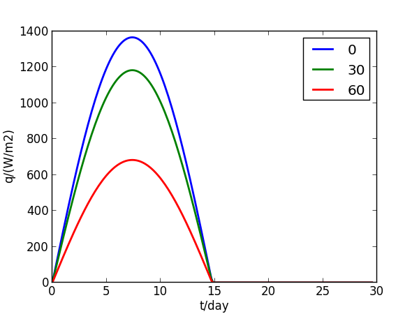
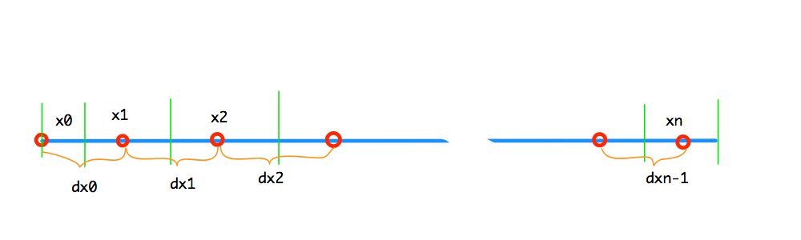
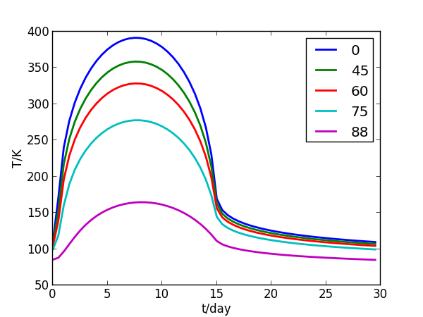
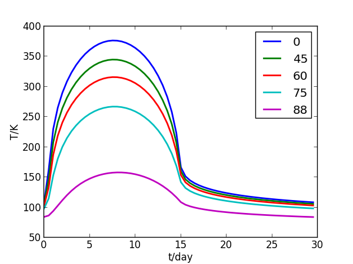
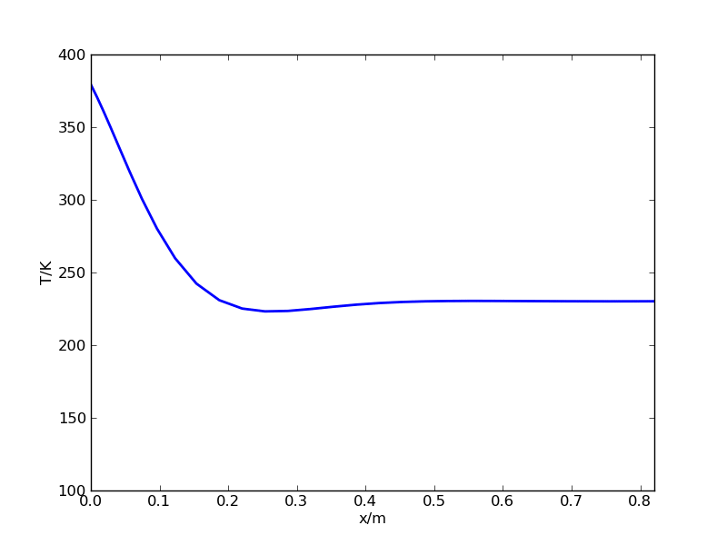
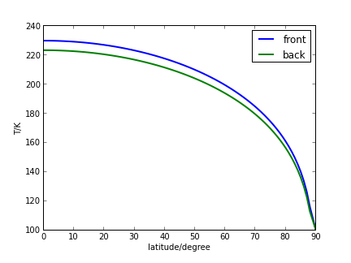
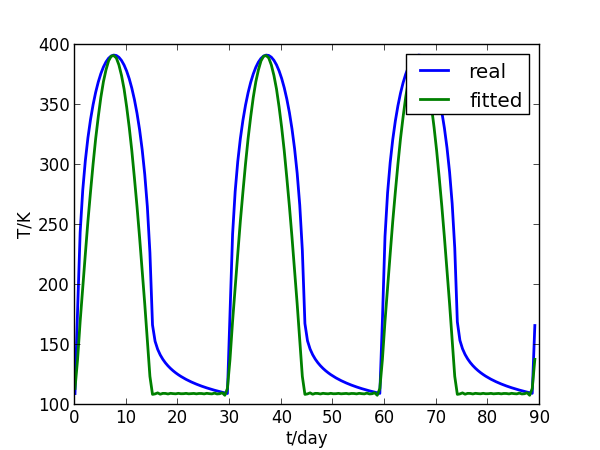
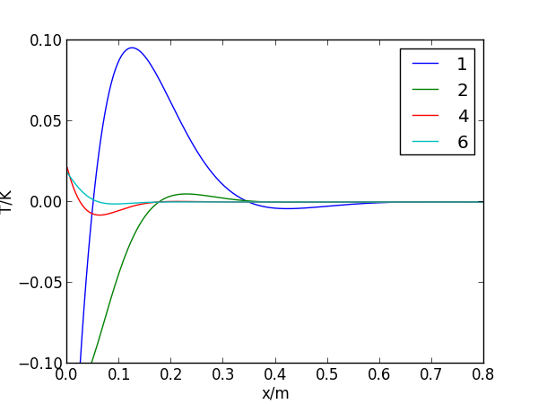
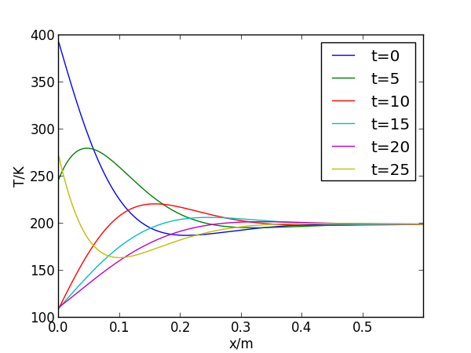

月球表面温度
月球表面基本上没有大气，表面被厚厚的一层松软月壤覆盖。月球的一个昼夜很长，约为 29.5 地球日（阴历的一个月）。在这漫长的一天中，月球表面的温度将随着太阳高度的变化而变化，正午的温度很高，而到了夜间，没有大气的保温，月球表面的温度又会降到很低。本文将给出一个简单的模型，预测月球表面的温度变化。
Table of Contents
模型
虽然月球表面有很多的撞击坑、环形山，但总体上可以将表面看作是平的，而且假设月壤的质地均匀，因此月壤的温度只在深度方向变化（虽然在大尺度上不同地区的温度是不同的，但在水平方向上的温度变化要远小于深度方向上的变化），也就是说其温度分布可以简化为一维问题。
一维非稳态、常物性、无内热源的导热方程为： \begin{equation} \frac{\partial T}{\partial t}-a\frac{\partial^2 T}{\partial x^2}=0 \end{equation} a 是月壤的热扩散率。
导热方程非常简单，但是决定温度变化的关键在于边界条件，尤其是表面与外界的换热条件。由于月球表面的大气可以忽略，月球表面与外界的换热只能以辐射的方式进行。它所吸收的外界辐射只有太阳辐射（当然也有地球辐射、太空背景辐射等，但它们相比太阳辐射可以忽略），吸收的太阳辐射为： \begin{equation} q = \alpha_s S\cos\delta \mathrm{max}(0,\cos\theta) \end{equation} αs 是月壤表面的太阳吸收比， S 是太阳常数, δ 是所在地区的纬度，θ 是时角（表示地方时的角度，正午太阳高度最高时为0，子夜时为 π，随时间变化）。这个公式忽略了太阳辐射强度的变化和月球赤道和黄道面夹角的影响（其导致的误差量级很小）。
不同纬度的月球表面太阳辐射见下图。
import matplotlib.pyplot as plt
import numpy as np
from math import pi, sin, cos
theta = np.linspace(-pi/2,1.5*pi,180)
S = 1367.
T0=[S*cos(0)*max(0,cos(t)) for t in theta]
T30=[S*cos(pi/6)*max(0,cos(t)) for t in theta]
T60=[S*cos(pi/3)*max(0,cos(t)) for t in theta]
fig=plt.figure(figsize=[6,4.5],dpi=120)
d = (theta+0.5*pi)/(2*pi)*29.53
plt.plot(d, T0, linewidth=2, label='0')
plt.plot(d, T30, linewidth=2, label='30')
plt.plot(d, T60, linewidth=2, label='60')
plt.ylabel('q/(W/m2)')
plt.xlabel('t/day')
plt.legend(loc='best')
plt.axis([0,30,0,1400])
pic = 'img/solar_flux_moon_lat.png'
plt.savefig(pic)

不同纬度的月球表面的太阳辐射
同时，月球表面还会向外辐射热量： \begin{equation} q_r=\varepsilon\sigma T^4 \end{equation} ε 是月球表面的发射率，σ 是黑体辐射常数。
因此在月球表面的边界条件为： \begin{equation} \frac{\partial T}{\partial x}|_{x=0}=-\frac{1}{k}(\alpha_s S\cos\delta \mathrm{max}(0,\cos\theta)-\varepsilon\sigma T^4) \end{equation} 式中 k 是月壤热导率。
对于这个定解问题，只有一个边界条件是不够的，另外一端还需要一个。但是另外一端在哪里呢？在月球中心？严格讲，是的。但我们不需要求解那么深。因为月球内部几乎没有热源，引起月壤温度波动的因素只有表面的辐射换热。表面的换热是周期性的，那么它必然对浅层影响大，随着深度的增加其影响减小，当到达一定深度后温度就不再受表面影响，波动为0。该深度以下便称作恒温层。因此我们只需要计算到恒温层，假设其深度为 x0 ，则此处的边界条件为： \begin{equation} \frac{\partial T}{\partial x}|_{x=0}=0 \end{equation} 有了导热方程和两个边界条件，就能够求解出月壤内的温度分布和随时间的变化了。这是一个典型的一维定解问题，但求出解析解却是不可能的。我们下面将用数值方法对其进行求解。
离散求解
模型和程序
首先要划分网格。一维网格划分如下：红色圈是节点，绿色竖线间的是单元。左侧是月壤表面边界，右侧是内部恒温层边界。除左侧边界节点外，其余节点都位于单元的中心。因左侧边界为辐射边界，边界上的温度值很关键，因此将节点放在边界上（此节点温度又代表整个单元的温度，会有一定的误差，这可以通过减小边界单元的尺寸来降低误差）。 xi 是各单元的宽度，dxi 是节点间的间距。

一维网格划分
利用单元的能量平衡，可以容易的建立节点的离散方程： \begin{equation} T_i^{k+1}-T_i^{k}=\frac{\Delta t}{\rho c}\frac{q_{i}-q_{i+1}}{x_i} \end{equation} 上标 k+1 表示新的时刻，k 表示上一时刻。q 是单元间的热流，qi 表示 i 单元与左侧单元间的热流： \begin{equation} q_i = k\frac{T_{i-1}-T_i}{dx_{i-1}} \end{equation} 对左侧边界，q 就是吸收的净辐射热流，前面已经给出。右侧边界为绝热，q=0。
实践证明，用显式格式更有效率（主要是因为有辐射边界，用隐式格式需要多次迭代，使得步长大的优势被化解）。因此程序就非常简单了。
def run(x, k, rhoc, days, dt, T0, lat)
adt = k/rhoc*dt
N = len(x)
dx = (x[:-1]+x[1:])/2.
dx[0] += x[0]/2
T = np.array([T0]*N)
q = np.array([0]*(N+1))
coslat = cos(lat*pi/180)
for i in xrange(int(days*24*3600/dt)):
q[1:-1] = (T[:-1]-T[1:])/dx
qs = S*coslat*max(0,-cos(dt*i/month*2*pi))
q[0] = (a_s*qs - em*sigma*T[0]**4)/k
T += (q[:-1]-q[1:])/x*adt
关于求解
前面提到，没有必要用隐式格式。那么显式格式能允许多大的步长呢？对显式格式，理论的最大步长为 \(\Delta x^2 / a / 2\) , 对此问题，当网格间距为 0.01m 时，理论最大步长约为 4000s，实践表明用 600s 的步长完全没有问题。
另外一点是计算域的深度，即假设的恒温层厚度，以及网格数量的选取。
理论上，恒温层深度越深，计算越准确。然而实际上却不是这样。因为当深度较大时，温度梯度已经很小了，甚至会小于截断误差，此时更深处的温度就不会再发生变化。具体体现是，当计算深度太深（如超过1.5m），如果初始温度高于实际的恒温层温度，则最终收敛的温度要比恒温层温度高（取决于计算的深度，深度为2m时，误差约 1K），而当初始温度低于实际的恒温层温度时，最终收敛的温度低于恒温层温度。而这两种情况下的温度平均值恰好等于恒温层温度。
实践表明，在赤道，恒温层厚度取1m时，两种初始温度计算结果已非常接近，误差只有约 0.2K。
在网格数方面，30网格和70 网格的计算结果相差很小。一般就用 30个网格。
网格和时间步长是相关的。因为第一层的网格间距小，因此要根据该层间距确定合适的时间步长。当第一层的间距取 0.005m 时，用 600s 的时间步长就可以，但间距为 0.004 时，600s 的时间步长就导致了较大的误差，用 300s 的时间步长就可以。
模拟结果
月球表面的温度波动
用前面给出的程序进行模拟，一段时间后表面温度就达到了周期的波动。
月壤的物性取：密度 1500 kg/m3，比热 600 J/kg-K，热导率 0.01 W/m-K，表面发射率取 0.92，月球正面的太阳吸收率取 0.91，而背面的吸收率取 0.78（月球背面的反射率高于正面）。
模拟得到的月球正面不同纬度地区的表面温度波动见下图。

月球正面不同纬度地区的表面温度波动
模拟得到的月球背面不同纬度地区的表面温度波动见下图。

月球背面不同纬度地区的表面温度波动
可见，表面温度在白天随太阳高度的变化而快速变化，正午时温度最高。到了夜晚，温度则缓慢下降，到日出前达到最低。
正面的赤道地区最高温度达 391 K。随着纬度的升高，最高温度下降，尤其是当纬度大于60度以后，最高温度迅速下降，到88度时，最高温度只有 164 K。
月球正面的温度比同纬度下背面的表面温度高，对于赤道地区，最高温度正面比背面高约 15 K。
不同纬度地区的最低温度差别不大，也是随着纬度的增加略有下降，只有到高纬度时下降幅度才变大。大部分地区的最低温度都在 100 ~ 110 K之间。
正面和背面的最低温度差别不大。
没有计算两极点的温度，因为该模型没有考虑月球自转轴的倾斜，极点的太阳入射角始终为0，根据本文模型得到的温度也为0 K。但实际上两极还是有一定的太阳入射，温度要高一些。因此本文的模型不能预测极点的表面温度。但极点的表面温度应该低于纬度为88度的表面温度。
月壤内的温度分布和波动
在模拟的起始，月壤表面的温度随日照的变化而迅速跟随，但月壤内部的温度却跟进很慢，波动是慢慢地进入内部。下面的动画是前 30000 小时的内部温度波动。 ./img/wavestart3000hour.mp4
当内部温度达到稳定波动时，月壤内的温度分布的波动： 
恒温层温度
根据计算结果，月壤地表以下1m处的温度波动就很小了，波动幅度基本上小于0.01K，可以认为到达了恒温。
恒温层温度随纬度变化。下图是恒温层温度随纬度的变化曲线，极点的恒温层温度给定为 100 K。背面的恒温层温度比正面稍低。

月壤恒温层温度随纬度的变化
月壤内部温度波动的解析求解
前面通过数值模拟得到了月壤表面和内部的温度波动，能不能求得解析解呢？从原定解条件看无法得到（因为表面的边界条件是非线性的）。但观察我们得到的表面温度变化，与上半个余弦曲线非常近似，做如此近似后就可以求得解析解了。
近似后，边界条件变为： \begin{equation} T|_{x=0}=T_0+A\max(0,\cos(\frac{2\pi}{\tau}t)) \end{equation} 以赤道表面的温度波动为例，上式中的 T0=109.5 , A=282 。
要用分离变量法求解该问题，首先要对边界条件做 Fourier 展开。\(\max(0,\cos x)\) 可以展开为如下的余弦级数， \begin{equation} \max(0,\cos x)=a_0 + \sum_{n=1}^{\infty}a_n\cos(nx)=\frac{1}{\pi}\left[1+\frac{\pi}{2}\cos x+\sum_{j=1}^{\infty}(-1)^{j+1}\frac{2}{4 j^2-1}\cos(2 j x)\right] \end{equation} 因此边界条件解展开为： \begin{equation} f(t) = T_0 + A\max(0,\cos(\frac{2\pi}{\tau}t))= T_0 + A\frac{1}{\pi}\left[1+\frac{\pi}{2}\cos(\frac{2\pi}{\tau}t)+\sum_{j=1}^{\infty}(-1)^{j+1}\frac{2}{4 j^2-1}\cos(2 j\frac{2\pi}{\tau}t)\right] \end{equation} 下图是取到10阶的拟合曲线与数值模拟得到的表面温度波动（赤道）。可见基本上能够反映温度波动特征。

数值模拟的地表温度波动及 Fourier 拟合的结果对比
对于该定解问题，我们只关心达到稳定循环之后的结果，对于初始值的影响不关心。因此可以忽略解中的初始值影响的部分。根据解的叠加性质，我们可以把最终的解看作分别对应于边界条件Fourier展开后各项对应的解的线性叠加。即看作边界条件为 \(T_0 + A/\pi\) , \(A/2\cos(2\pi t/\tau)\) , \(2/3A/\pi\cos(4\pi t/\tau)\) , … 时得到的解的叠加。
边界为常数，如 Fourier 分解的第一项，解同样为常数（不考虑初始值的影响）。而后面的项，都是 Bcos(ω t) 的形式。其对应的解为： \begin{equation} T_i = B e^{-x\sqrt{\frac{\omega}{2 a}}}\cos\left(\omega t-x\sqrt{\frac{\omega}{2 a}}\right) \end{equation} 因此，最终的解为： \begin{equation} T = T_0 + \frac{A}{\pi} + \frac{1}{2}A e^{-x\sqrt{\frac{\pi}{a\tau}}}\cos\left(\frac{2\pi}{\tau} t-x\sqrt{\frac{\pi}{a\tau}}\right) + \frac{2}{\pi}A\sum_{j=1}^{\infty}\frac{(-1)^{j+1}}{4j^2-1}e^{-x\sqrt{\frac{2j\pi}{a\tau}}}\cos\left(\frac{4j\pi}{\tau} t-x\sqrt{\frac{2j\pi}{a\tau}}\right) \end{equation} 从这个解可以看出：
- 各个点的温度都是由频率为 1/τ 及其倍数的余弦波组成的，频率越高的波幅度越低；
- 随着深度（x）的增加，波动幅度以指数规律下降，且频率越高的波动下降幅度越快；
- 深度达到一定时，波动的幅度非常小，说明已到恒温层，恒温层的温度就等于常数项，也就是表面温度的平均值；
- 随着深度的增加，其波动的相位滞后。对每个频率的波，其对应一个波长，频率越高，波长越短。
下面用所得的解析解绘制内部的温度分布曲线。
import matplotlib.pyplot as plt
import numpy as np
from math import pi
T0 = 109.5
A = 282
tau = 29.5*24*3600
a = 0.01/(1500*600)
omg = 2*pi/tau
def f1(x,t):
tt = x*(omg/(2*a))**0.5
return 0.5*np.exp(-tt)*np.cos(omg*t-tt)
def fj(x,t,j):
tt = x*(2*j*omg/(2*a))**0.5
return 2/pi*(-1)**(j+1)/(4*j**2-1)*np.exp(-tt)*np.cos(2*j*omg*t-tt)
def fn(x,t,n):
f = f1(x,t)
for i in xrange(1,n+1):
f += fj(x,t,i)
return T0+ A/pi + A*f
def draw_fig1():
fig=plt.figure(figsize=[6,4.5],dpi=120)
x=np.linspace(0,0.8,200)
t=tau/3.
plt.plot(x,f1(x,t),label='1')
plt.plot(x,fj(x,t,1),label='2')
plt.plot(x,fj(x,t,2),label='4')
plt.plot(x,fj(x,t,3),label='6')
#plt.plot(x,fn(x,t,3),label='sum(6)')
plt.xlabel('x/m')
plt.ylabel('T/K')
plt.axis([0,0.8,-0.1,0.1])
plt.legend(loc='best')
pic = 'img/fluctuation_t0_6.png'
plt.savefig(pic)
def draw_fig2():
fig=plt.figure(figsize=[6,4.5],dpi=120)
x=np.linspace(0,0.8,200)
plt.plot(x,fn(x,0,5),label='t=0')
plt.plot(x,fn(x,5*24*3600,5),label='t=5')
plt.plot(x,fn(x,10*24*3600,5),label='t=10')
plt.plot(x,fn(x,15*24*3600,5),label='t=15')
plt.plot(x,fn(x,20*24*3600,5),label='t=20')
plt.plot(x,fn(x,25*24*3600,5),label='t=25')
plt.xlabel('x/m')
plt.ylabel('T/K')
plt.axis([0,0.6,100,400])
plt.legend(loc='best')
pic = 'img/fluctuation_t_all.png'
plt.savefig(pic)
draw_fig1()
draw_fig2()
下图给出的是主要的几个波动（基频、2、4、6倍频）在月壤中的分布。因为只观察其相对大小，没有乘振幅 A 。从中能够看出随着频率的增加，波幅减小，波长减小；随着深度的增加，波幅减小。

主要的几个波动
用得到的解析解绘制的不同时间（单位：地球日）月壤内的温度分布（只统计到10倍基频）。

不同时间的月壤内的温度分布
结语
通过模型和分析，对月球表面的温度情况及其规律有了比较清晰的了解。实际上，月球的热环境是进行月球探测和开发的重要信息，受到特别的关注。前几年，NASA和UCLA等机构联合开展了一个 DIVINER 项目，利用绕月卫星携带的红外探测器对月球表面进行了全面的扫描，还原出了月球表面的温度地图。